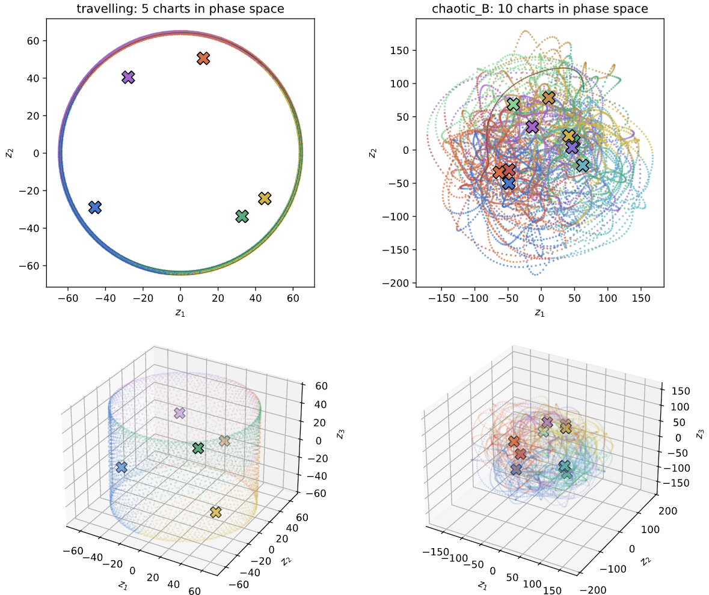
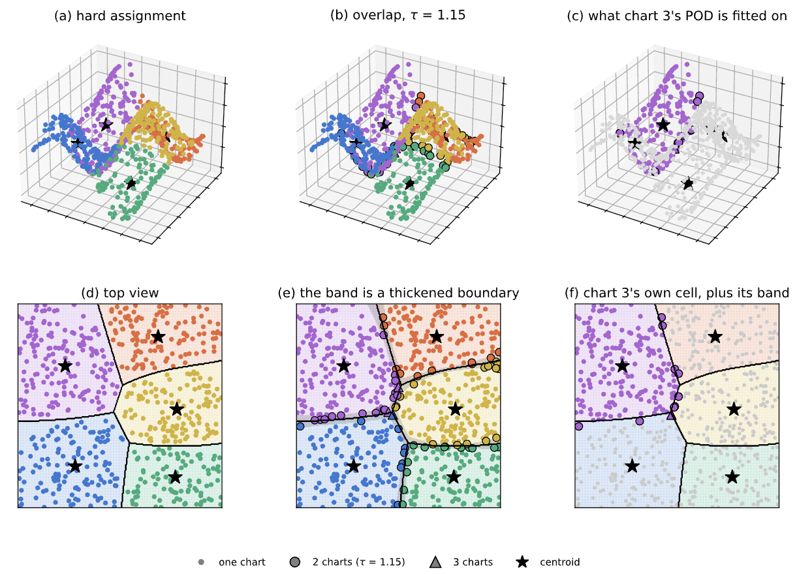

Theory
A reduced-order model replaces a high-dimensional simulation by a small system of ODEs. A quantized-local ROM (ql-ROM) does it \(K\) times: it cuts the attractor into \(K\) regimes, gives each one its own low-dimensional coordinate system, and advances whichever one the trajectory is currently in. This page is the short version; tutorials 1, 2 and 4 are the long one.
Notation: \(\bm{q}\in\mathbb{R}^{N_h}\) is the physical state, \(\mathbf{W}\) the inner-product weight (quadrature weights or an FEM mass matrix; the identity for plain dof vectors), \(\bar{\bm{q}}_k\) and \(\bm{\Phi}_k\in\mathbb{R}^{N_h\times r}\) chart \(k\)'s centroid and local basis, \(\bm{a}_k\in\mathbb{R}^r\) its reduced coordinates.
1. Why one global basis is not enough
The classical ROM picks a single subspace, \(\bm{q}\approx\bar{\bm{q}}+\bm{\Phi}\bm{a}\), with \(\bm{\Phi}\) from POD of all snapshots. It works when the attractor is close to one \(r\)-dimensional flat. The error it can never beat is the projection error
the tail of the POD spectrum. A travelling wave is a rotation in state space: the tail decays fast and a global basis does fine. A chaotic field visits genuinely different configurations and the tail is heavy — that is the regime a quantized model is for.
2. Quantization: cut the attractor into charts
Partition the snapshots into \(K\) clusters with k-means, i.e. minimize the within-cluster spread
in the same inner product as the POD and the projection below: the partition, the affiliation and every distance are measured in the metric the reduced model lives in. \(\mathbf{W}=\mathbf{I}\) gives the Euclidean norm, and a uniform weight is just a scale; with an FEM mass matrix the refined regions of the mesh no longer count more than the coarse ones.
and give cluster \(k\) its own centroid \(\bar{\bm{q}}_k\) and its own POD basis \(\bm{\Phi}_k\), so that inside chart \(k\)
\(\beta\) is the affiliation function: at every instant it names the active chart. Each chart now spends its \(r\) modes on one regime instead of on the whole attractor.

The picture to keep in mind is in phase space (first global POD coordinates): the charts tile the attractor into regions the trajectory wanders between.
In code this is qlroms.charts.fit_clusters (k-means, with kmeans_method,
cluster_space, assign_overlapping / overlap_tolerance as the knobs) plus one
compute_pod_basis per cluster; qlroms.atlas.fit_charts does all of it in one call and
returns an Atlas. The weight \(\mathbf{W}\) (Mw: None, a diagonal, or a sparse mass matrix)
enters through qlroms.charts.clustering_features, which returns features in which plain
Euclidean distance is the \(\mathbf{W}\) distance (so k-means minimizes \(J\) above), and through
qlroms.metric.CentroidIndex, the nearest-centroid rule behind \(\beta\). Overlapping assignment duplicates boundary snapshots into every chart
that claims them, which softens the seams:

3. The atlas: one affine space that contains all of them
A chart is an affine space. Mapping a reduced state from chart \(i\) to chart \(j\) directly (project \(\bar{\bm{q}}_i+\bm{\Phi}_i\bm{a}_i\) onto chart \(j\)) is an affine map \(\bm{a}_j=\mathbf{T}_{ji}\bm{a}_i+\bm{d}_{ji}\) — and it does not come back: the local → local round trip through a neighbouring chart loses whatever lies outside the intersection of the two subspaces.
The atlas fixes that. build_global_assimilation_basis builds one shared affine
space \((\bar{\bm{q}}_g,\bm{\Phi}_g)\) that contains every chart, with maps
\(\mathbf{T}_{gk},\bm{d}_{gk}\) (chart \(k\to\) atlas) and \(\mathbf{T}_{kg},\bm{d}_{kg}\)
(atlas \(\to\) chart \(k\)). The round trip local → atlas → local is then the exact
identity up to floating point (\(\sim 10^{-15}\)), distances in the atlas are the true
\(\mathbf{W}\)-distances, and the same holds with a non-identity inner product, including a
full FEM mass matrix. The index convention is target first, source second: \(\mathbf{T}_{ji}\)
maps from \(i\) to \(j\).
The chart-to-chart (pairwise) rule is exact too. The distance from a state \(\bm{a}\) in chart \(k\)
to the centroid of chart \(i\) is
\(d_i^2=\|\bm{d}_{ik}-\bm{a}\|^2+\varrho_{ik}\), where \(\bm{d}_{ik}=\bm{\Phi}_k^\top\mathbf{W}(\bar{\bm{q}}_i-\bar{\bm{q}}_k)\)
is the in-chart part of the centroid and \(\varrho_{ik}\) the squared \(\mathbf{W}\)-distance of
\(\bar{\bm{q}}_i-\bar{\bm{q}}_k\) outside chart \(k\)'s subspace, a \(K\times K\) matrix computed once
(TransitionMaps.oos2). Dropping \(\varrho\) leaves the in-chart distance, which ranks far
centroids wrongly (diagnosis.switching_fidelity_report still measures it as
chart_in_subspace).
qlroms.transitions.TransitionMaps carries both the pairwise maps and the atlas maps;
the atlas coordinates are what a data-assimilation frame works in.
4. Dynamics on the charts: the intrusive step
So far nothing has moved in time. The intrusive (Galerkin) route takes the governing equations and projects them onto each chart. Substituting \(\bm{q}=\bar{\bm{q}}_k+\bm{\Phi}_k\bm{a}\) into \(\dot{\bm{q}}=\mathcal{L}\bm{q}+\mathcal{N}(\bm{q},\bm{q})\) and applying \(\bm{\Phi}_k^\top\mathbf{W}\) gives a closed quadratic system in \(r\) unknowns,
one \((\bm{b}_k,\mathbf{A}_k,\mathsf{B}_k)\) per chart, integrated with ETDRK4 (the linear
part exactly, the quadratic part explicitly). A compilation of \(K\) such members is a
qlGalerkin. This is what the three cases provide:
- KS 1-D / 2-D — spectral operators; the reduced operators come straight from the
FOM's Fourier multipliers (
ks1d.rom.ROM,ks2d.rom.ROM). - Fluidic pinball (Navier–Stokes, FEniCSx) — mass-orthonormal velocity POD modes plus
supremizers, UFL assembly of the projected momentum and pressure-Poisson equations, and
pressure eliminated through the PPE so the member has the same closed quadratic form
(
pinball.rom.ROM,pinball.rom.build_local_model).
5. Closed loop: step inside one chart, hand over at the seams
Every quantized-local model exposes the same surface, model.step(apod): the augmented
reduced state apod \(=(\bm{a},\,k)\) is advanced one step with chart \(k\)'s operators, the
recovered physical state is re-affiliated, and on a chart change the coordinates are
carried across with the transition maps. qlroms.free_run iterates that into a
forecast and returns the chart path with it.
References
- Colanera, A., & Magri, L. (2025). Quantized local reduced-order modeling in time (ql-ROM). Computer Methods in Applied Mechanics and Engineering, 447, 118393.
- Colanera, A., & Magri, L. (2026). Towards extreme event prediction of turbulent flows with quantized local reduced-order models. Journal of Physics: Conference Series, 3230(1), 012003.